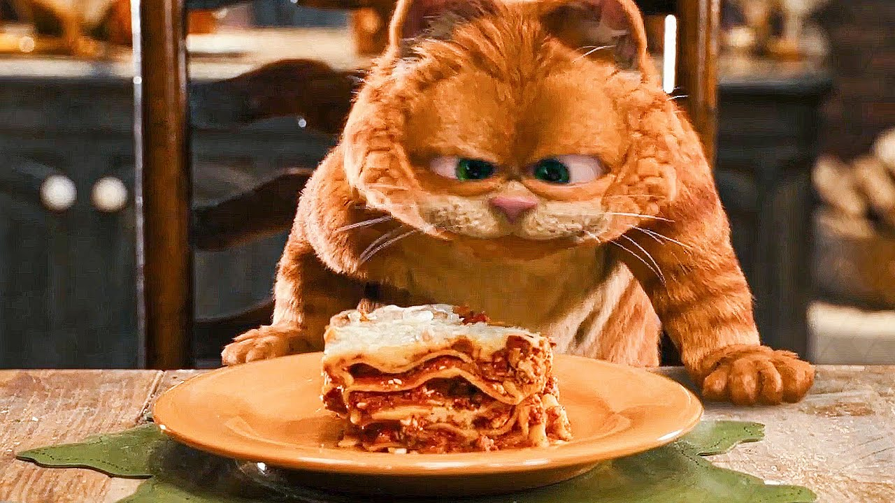

GO BACK
Unknown Meat Lasagna
I'll be honest, guys...I have no idea where I got this meat from.

On September 8, 2022, Queen Elizabeth II died. To some, this represented a larger reference to a perhaps more significant event in history, namely the second live-action Garfield movie "Garfield: A Tail of Two Kitties".
In the film, Garfield utilizes his (perhaps unrightfully earned) royal abilities to have his subordinantes prepared a large lasagna feast for the animals. This recipe attempts to replicate this lasagna fit for a king.
Ingredients
- 12 whole wheat lasagna noodles
- 1 pound lean ground beef
- 2 cloves garlic, chopped
- 1 teaspoon dried oregano, or to taste
- ½ teaspoon garlic powder
- salt and ground black pepper to taste
- 1 (16 ounce) package cottage cheese
- ½ cup shredded Parmesan cheese
- 2 eggs
- 4 ½ cups tomato-basil pasta sauce
- 2 cups shredded mozzarella cheese
Directions
- Heat up your oven to 350 degrees F (175 degrees C).
- Get a big pot of water boiling with a pinch of salt. Toss in your lasagna noodles and cook them for about 10 minutes until they're just right; then, drain them.
- While the noodles are cooking, throw some ground beef, garlic, oregano, garlic powder, salt, and pepper into a large skillet on medium heat. Cook and stir until the beef is all crumbly and browned, which usually takes around 10 minutes.
- In a big bowl, mix together cottage cheese, Parmesan cheese, and eggs until it's all nicely combined.
- Line the bottom of a 9x13-inch baking pan with 4 noodles. Layer on some tomato-basil sauce, then the beef mixture, followed by the cottage cheese mix. Repeat these layers twice more, finishing with a sauce layer on top. Sprinkle some mozzarella cheese over it all. Cover the dish with foil.
- Pop it in the oven and bake until the lasagna is bubbling and the cheese is all melty, which usually takes about 30 minutes. Take off the foil and bake a bit longer until the cheese starts to brown, around 10 more minutes. Let it sit for at least 10 minutes before digging in (like Garfield).